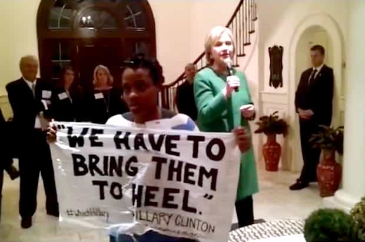

< < < Back
Hillary Clinton Pulls Out The Lie Book To Try And Stump The Trump At The First Presidential Debate – Return Of Kings
Monday night’s first Presidential debate, held at Hofstra University in New York, lacked some of the rhetorical fireworks between Donald Trump and Hillary Clinton that many had anticipated. Still, the performances of both candidates confirmed earlier assessments made by Return Of Kings. Republican nominee Trump highlighted how America is continuing to lose out economically, socially, and in terms of its national security to other states and organized groups, including ISIS. By contrast, Clinton deployed a series of diversions and straight-out lies to bait again those perennial victims brainwashed by Democrats over decades: millions of blacks, Hispanics, young people, and non-SJW women.
(starts at 26:00)
The problem with Clinton’s performance is that she relied on “zingers,” as the mainstream media calls them, which are considered factual and superb just because she says them. They are either inaccurate or, just as bad, banal platitudes about “justice,” “fairness,” and “equality.” These feel-good lines are devoid of either context or proof. Compare this to Trump, who zoomed in perfectly on the cancers afflicting the US: deference to rivals and enemies, failing to ask allies for proper support, and a basic refusal to act in the ways that are best for America.
Here are three key areas in which the Trump-Clinton divide was most prominent during last night’s debate:
Hillary can’t shake off her globalist past—and future
Trump astutely homed in on Hillary Clinton’s previous “gold standard” description of the toxic Trans-Pacific Partnership (TPP) “free trade” proposal, support which the Democratic nominee claimed to have backtracked on only months ago. He linked this praise to her fawning endorsement of NAFTA in the 1990s. NAFTA, as Trump pointed out, has led to the erosion of American manufacturing and the strange situation where Mexico is allowed to export its goods into America with much smaller financial barriers than the reverse. The TPP promises to do the same and, when it comes to US based-interests, will only benefit transnational corporations.
Clinton was unwilling to categorically rule out backing the TPP again if elected President and avoided criticizing Barack Obama for wanting it implemented. She also said nothing of substance in relation to combating China’s extremely anti-free trade behavior, most notably the constant devaluation of its currency. In the context of a $20 trillion US national debt and trade deficits that balloon ever more, the likely Democratic inaction on this front is alarming and only surrenders national, rather than corporate interests. What she did do was to try to placate those wanting a welfare state, promising things like “debt-free college” and a minimum wage rise. But how can those she will get the money from, “the wealthy,” pay for both these shopping items and simultaneously pay down the debt?
When the topic switched to terrorism, the Democratic nominee refrained from discussing how ISIS began its rise when she was Secretary of State, an inconvenient truth she was quickly reminded about. Expanding on this bad judgment point, Trump alluded to a related national security failure of the “experienced” Secretary Clinton: the United States’ persistent bankrolling of other states’ safety at the direct expense of its own. The whole point of NATO is that it is an alliance, but America always seems to foot the bill, just as it does in its relationship with Japan. In response, Hillary Clinton was unable—or simply refused—to articulate how this is either a desirable or affordable state of affairs. This is telling as nationalist vs. globalist arguments grow more salient within the current American political discourse.
Gender pay gap madness
Hillary Clinton unsurprisingly brought up the gender pay gap, a long-discredited myth that ignores how women, even those employed full-time, work on average less hours than men. This political fiction, one perpetually drawing in millions of self-victimized female voters and emasculated white knights, fails to acknowledge the greater presence of men in higher-skilled and therefore higher-paying industries as well.
Despite the certainty that this kind of argument would be raised, Clinton took it to a new, far more delusional level by suggesting that women deserve the same pay for inferior work. She claimed that Donald Trump “said women don’t deserve equal pay unless they do as good a job as men.” He actually did not say this, as a fact check used in a USA Today article illustrated months ago.
Yet even if he had made the statement, this is perhaps the least controversial soundbite, real or imagined, that anyone has ever used to try and discredit Trump. The falsely attributed words are one hundred percent in line with the idea of “equal pay for equal work.” If your work is not of the same quality as your peer, you should not get equal pay. How, for example, is a junior female lawyer who brings in less clients and billable hours than her male counterpart deserving of equal pay? What Trump did say is that he favors paying employees based on performance.
Necessary corrections aside, Hillary Clinton’s line is merely a prelude to the affirmative action she will unleash upon the American economy if elected. Having already implied that women deserve equal pay even if their work and performance cannot be described as equal, expect concrete legislation that will force employers to hire women over men, irrespective of their credentials, socioeconomic backgrounds (preferential treatment allows many Middle American men to be leapfrogged by women from privileged families), and the real requirements of the job.
Race-baiting… again

Hillary Clinton reverted to re-peddling the tired old fantasy that 2016 is the new Jim Crow laws era. Forgetting that countless non-blacks are in jail for non-violent offences, too, she falsely portrayed African-Americans as the victims of police harassment and racist hysteria over crimes that are not murder, rape or serious assault. To boot, she pushed aside the higher involvement of blacks in violent felonies. Clinton further outlined how outright (white) racism, not certain cultural values and black-on-black brutality, purportedly explains almost every conceivable problem confronting African-Americans today. Plus, she did not ever call out the truly deplorable rioters in Charlotte, nor condemn overall the opportunistic troublemakers that comprise Black Lives Matter.
Trump absolutely schooled his opponent, however, when it came to the astounding rate of violence in Chicago, Clinton’s city of birth. In a metropolitan area where gun laws are amongst the most restrictive in the nation, black-on-black crime especially has decimated African-American communities. Clinton’s crude racial politics quickly became stuck and the candidate herself appeared to be flustered. After all, Chicago, which Trump was using as an example of the general malaise of crime found across the country, is controlled locally by Democrats, like most major cities.
The desperation of Hillary Clinton, a representative of a party which has failed America’s minorities and made them poorer, became evident when she mentioned a racial discrimination lawsuit, not a finding of guilt, brought against Trump forty years ago. With nothing to offer blacks and Hispanics, other than the same old dud policies on a national and municipal level, she had to invent a boogeyman to distract people.
But the media still lauded Clinton
The post-Hofstra debate media coordination will be just like this.
Regardless of her cheap antics at the debate, almost every mainstream media editorial from CNN’s to the LA Times‘ waxed lyrical about Clinton’s supposedly epic performance on Monday night. That sycophancy will only grow from now until election day. But if takes so much concerted, stooge-like media support to help her win, what does that say about her as a candidate?
Right now, though, we should be both proud of and amazed at where Trump is at the moment. Only six months ago, people were bellowing that he would still lose the Republican nomination. He could never ever win, the experts said. Moreover, just a year ago, his candidacy was considered a laughing stock by elites and nearly all supporters of the Democrats.
So who’s laughing at Donald Trump now? Not many people, and certainly not a very concerned Hillary Clinton.
Read More: Hillary Clinton Calls At Least 20% Of American Voters “Deplorables” For Supporting Trump